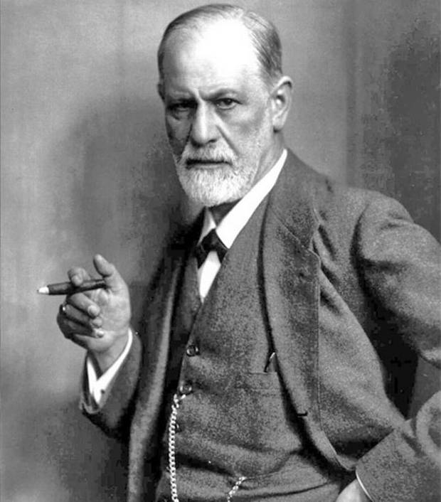
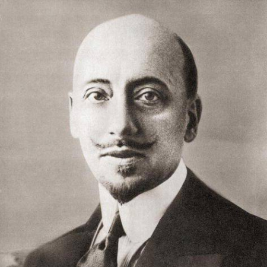
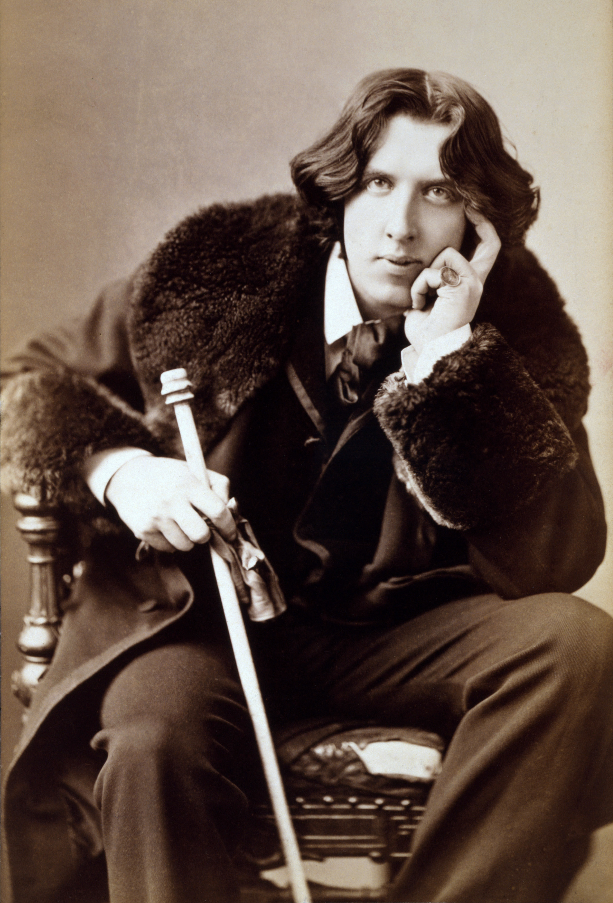

Il Decadentismo e la Psicoanalisi
Il Decadentismo è un complesso movimento culturale e letterario che si sviluppa tra la fine dell'Ottocento e l'inizio del Novecento, ponendosi in netta contrapposizione con il Positivismo e la fiducia cieca nella scienza. Le caratteristiche generali del movimento risiedono nel rifiuto della razionalità e nell'esplorazione dell'irrazionale, del mistero e dell'inconscio. Questo filone si traduce nell'Estetismo — in cui la vita viene concepita come un'opera d'arte e il culto della bellezza diventa il valore supremo — e nel Nichilismo, che esprime il senso di vuoto e la crisi dei valori tradizionali dell'epoca.
Questo profondo rinnovamento della sensibilità artistica trova una sponda scientifica fondamentale nella contemporanea nascita della Psicoanalisi di Sigmund Freud. Lo studio freudiano dell'inconscio, delle nevrosi, della rimozione e delle pulsioni profonde dell'Io scardina la concezione classica di un individuo totalmente cosciente e razionale, influenzando in modo irreversibile i temi, le strutture narrative e la caratterizzazione psicologica dei personaggi della letteratura decadente.

Gabriele D'Annunzio: Vita e Opere
Gabriele D'Annunzio incarna in modo perfetto la figura dell'esteta e del letterato-eroe nel panorama del Decadentismo italiano. I cenni biografici evidenziano una vita eccezionale, vissuta all'insegna del lusso, dell'arte, delle passioni e delle celebri imprese militari (come il Volo su Vienna o la Reggenza del Carnaro), sintetizzata nel celebre motto di "fare della propria vita un capolavoro". La sua poetica è guidata dal panismo — la fusione totale ed estatica con la natura — e dal mito del Superuomo, mutuato e riadattato dal pensiero nietzschiano.
L'evoluzione del suo pensiero è rintracciabile nei suoi capolavori: "Il piacere" (1889), romanzo manifesto dell'estetismo italiano incentrato sulle vicende di Andrea Sperelli; "Alcyone", raccolta poetica d'altissimo livello formale che celebra l'estate e la metamorfosi naturale; e infine "Il notturno", un'opera intima e frammentaria, scritta in una condizione di temporanea cecità, che segna un ripiegamento interiore doloroso, lontano dai toni trionfali delle opere precedenti.

Oscar Wilde & The Picture of Dorian Gray
Oscar Wilde è il massimo esponente dell'Estetismo britannico ("Art for Art's Sake"). La sua biografia è segnata da un successo travolgente nei salotti londinesi grazie al suo spirito brillante, ai suoi aforismi folgoranti e al suo stile d'avanguardia, ma anche da un tragico epilogo dovuto al processo e alla condanna ai lavori forzati per la sua omosessualità, eventi che ne compromisero precocemente la salute e la carriera.
Il suo unico romanzo, "Il ritratto di Dorian Gray" (1890), costituisce l'opera-manifesto dell'estetismo europeo. La trama ruota attorno al giovane Dorian che, per mantenere intatta la propria leggendaria giovinezza e bellezza, stringe un patto implicito per cui i segni fisici del tempo, della corruzione morale e delle sue colpe non compaiono sul suo volto, ma si trasferiscono su un quadro dipinto dall'amico Basil Hallward. L'opera esplora l'ossessione per l'apparenza e il tragico sdoppiamento tra etica ed estetica.
Il Processo di Norimberga
Il secondo dopoguerra ha lasciato ferite profonde e la necessità di ricostruire un ordine internazionale basato sulla giustizia e sul diritto. Le drammatiche conseguenze del secondo conflitto mondiale includevano non solo la distruzione materiale delle città europee e la ridefinizione geopolitica globale, ma soprattutto lo svelamento degli orrori dei campi di sterminio nazisti, ponendo l'umanità dinanzi a interrogativi etici senza precedenti.
In questo scenario si colloca il Processo di Norimberga (1945-1946), istituito dalle potenze alleate per giudicare i principali leader e gerarchi del regime nazista. Il tribunale militare internazionale introdusse categorie giuridiche rivoluzionarie, formulando capi d'accusa specifici per i crimini di guerra, il crimine di aggressione e, per la prima volta nella storia, i "crimini contro l'umanità". Questo evento ha gettato le fondamenta giuridiche del moderno diritto internazionale e della tutela globale dei diritti umani.
The Modern Novel: Joyce & Woolf
At the beginning of the 20th century, the traditional Victorian structure of the novel collapsed under the influence of new psychological and philosophical theories. The Modern Novel shifts its focus from the external world and chronological action to the internal world of the human mind. To represent the chaotic and fluid nature of thoughts, authors rejected the omniscient narrator and developed innovative narrative techniques, such as the shifting point of view, the interior monologue, and the "stream of consciousness".
The key authors of this revolution are James Joyce and Virginia Woolf. Joyce uses a complex, multilayered interior monologue to explore the subconscious mind of his characters during a single day, introducing the concept of "epiphany" (a sudden spiritual manifestation). Woolf adopts a more poetic and fluid approach to the stream of consciousness, focusing on the psychological depth of her characters and capturing the significance of precise moments in time, which she calls "moments of being".

Pallavolo: Teoria e Pratica
La pallavolo è uno sport di squadra dinamico basato su precisione coordinativa, prontezza di riflessi e cooperazione tattica immediata. A livello scolastico e sportivo, la disciplina prevede lo studio dei fondamentali individuali sia d'attacco che di difesa, quali il palleggio, il bagher, la battuta (dal basso o dall'alto) e la schiacciata, elementi chiave per impostare azioni fluide e veloci sul terreno di gioco.
L'attività pratica si sviluppa attraverso mirate esercitazioni sul campo incentrate sul posizionamento e sulla sincronia dei movimenti dei sei giocatori in campo. Gli allenamenti si focalizzano sul controllo della palla e sulla transizione strategica dalla fase di ricezione a quella di alzata e attacco, promuovendo lo sviluppo delle capacità condizionali (come la forza esplosiva e la rapidità) e l'importanza del fair play e dello spirito di gruppo.